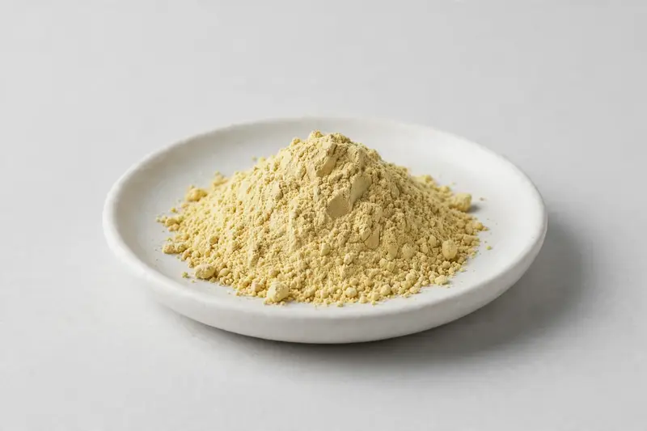

Honeysuckle — a chlorogenic-acid-standardized flower extract for immune-support and functional-beverage formulations.

Overview
Honeysuckle extract is obtained from the flower of Lonicera japonica and standardized to chlorogenic acid alongside other naturally occurring phenolic compounds. It is frequently requested for immune-support positioned products and functional beverages, typically between 5% and 25% chlorogenic acid. As a Xi'an-based trading company, we source through vetted partner producers and confirm feasibility against buyer specifications.
Specifications below reflect commonly requested options in the market — not a stock list. Share your target spec and we'll confirm exactly what we can supply, honestly.
| Specification | Details |
|---|---|
| Botanical identity | Honeysuckle extract powder (Lonicera japonica flower) |
| Marker compound | Commonly requested spec grades: chlorogenic acid 5%, 10%, 20%, 25% (HPLC or UV, as agreed) |
| Appearance | Pale yellow to yellowish-tan, sometimes light greenish-yellow fine powder |
| Mesh size | Typically 80–100 mesh (confirm per inquiry) |
| Testing | COA/TDS arranged on request; scope agreed per your spec |
Applications
Documentation
We don't claim in-house labs or certifications we don't hold. COA and TDS documents can be arranged on request, and testing scope is agreed against your specification before supply.
FAQ
Related products
Phosphatidylserine
Key marker: 20-50% PS
View specs →L-Alpha-glycerylphosphorylcholine
Key marker: 50% / 99%
View specs →L-Citrulline
Key marker: 99%+
View specs →Chrysanthemum morifolium
Key marker: Total flavonoids
View specs →Houttuynia cordata
Key marker: Aerial-part extract
View specs →Send your target spec and volumes — we'll respond with a tailored quotation.
Request a Quote